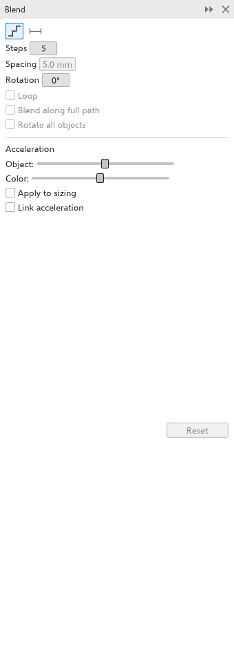

Mezclas
Una mezcla dibuja una serie de pasos intermedios entre dos objetos, cambiando la forma, el tamaño y el color de uno a otro. Úsela para sombreados suaves, patrones repetidos o una forma que se transforma en otra.
Para mezclar dos objetos
Con la herramienta:
- Elija la herramienta Mezcla en el menú desplegable Efectos.
- Arrastre desde el objeto inicial hasta el objeto final.
Con el panel:
- Seleccione dos objetos.
- Abra el panel Mezcla con Efectos > Mezcla (Ctrl+F8).
- Ajuste las opciones y haga clic en Aplicar.

Ambos objetos siguen siendo objetos del dibujo: mueva, cambie de tamaño o de color cualquiera de ellos y los pasos lo siguen. Al eliminar el objeto final se quita la mezcla.
Ajustes de la mezcla
Con una mezcla seleccionada, cada cambio en la barra de propiedades o en el panel se aplica de inmediato.
- Pasos de mezcla: el número de pasos (5 de forma predeterminada, hasta 999).
- Espaciado, para una mezcla sobre un trayecto: la distancia entre pasos; el número de pasos se deduce de la longitud del trayecto.
- Rotación: gira los pasos progresivamente; Bucle los gira en cambio alrededor del punto medio entre los dos objetos.
- Aceleración: el deslizador de objetos hace que los pasos se agolpen hacia un extremo; el deslizador de color hace lo mismo con los colores. Aplicar al tamaño hace que la aceleración de objetos cambie también los tamaños, y Vincular aceleración mantiene juntos los dos deslizadores. Restablecer devuelve ambos a un reparto uniforme.
- Mezcla de colores: Directa (directamente de un color al otro), En el sentido de las agujas del reloj o En sentido contrario a las agujas del reloj (alrededor de la rueda de colores).
La barra de propiedades de la herramienta tiene los pasos, la rotación y las dos aceleraciones.
Controles en el lienzo
Elija una mezcla con la herramienta Mezcla (haga clic en su objeto inicial o final, o en un paso) para ver sus controles: un cuadrado en el objeto inicial, un cuadrado tachado en el final, la línea entre ambos y dos deslizadores sobre ella, la aceleración de objetos arriba y la de color abajo.
- Arrastre un deslizador hacia el inicio o el final para agrupar allí los pasos o los colores. La mezcla sigue en vivo, cada arrastre es un paso de deshacer y la barra de propiedades se actualiza.
- Arrastre un cuadrado de un extremo para mover su objeto, y la mezcla cambia de dirección. Suéltelo sobre otro objeto para que este sea el nuevo inicio o final, con los ajustes de la mezcla.
La aceleración de objetos mueve los pasos hacia un extremo también cuando la mezcla no sigue un trayecto. Un efecto de mapa de bits en el objeto inicial mantiene la mezcla dibujada.
Mezclar a lo largo de un trayecto
- Seleccione la mezcla.
- Haga clic en Nuevo trayecto en el panel Mezcla y haga clic en una curva.
Los pasos siguen la curva. Girar todos los objetos orienta cada paso a lo largo de la curva, y Mezclar a lo largo de todo el trayecto coloca el primer y el último paso en los extremos de la curva.
Quitar o separar una mezcla
Borrar mezcla quita los pasos y deja ambos objetos. Separar convierte los pasos en objetos independientes. Los pasos salen agrupados junto al objeto. Objeto > Break Blend Group Apart (Ctrl+K, también en el menú del botón derecho) hace lo mismo.
Guardar como .cdr
Una mezcla guardada como .cdr (versión 9 o posterior) sigue siendo una mezcla: el archivo guarda los dos objetos y el registro de la mezcla entre ellos, así que el programa que abre el archivo muestra los pasos y permite cambiar la mezcla. Los pasos, el espaciado y los dos objetos van al archivo; la aceleración, la rotación, un trayecto y la dirección del color vuelven en TraceDraw (versión 14 o posterior); otros programas empiezan con sus valores predeterminados.